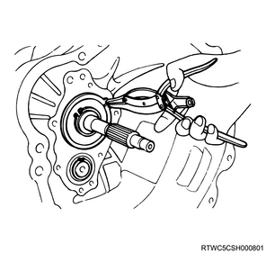

Note
1. Drain the transmission oil from the transmission.
1. Remove the release bearing from the transmission case.
Note
1. Remove the shift fork from the transmission case.
Note
1. Remove the front cover from the transmission case.
Note
1. Remove the counter front bearing snap ring from the counter shaft using a snap ring pliers.
1. Remove top gear bearing snap ring from the top gear shaft using a snap ring pliers.

Note
1. Remove the vehicle speed sensor from the transmission.
Note
1. Remove the retainer plate from the rear cover.
Note
1. Remove the speedometer driven gear from the rear cover.
Note
1. Remove the control box from the transmission.
Note
1. Remove the rear cover from the transmission case and the intermediate plate.
Note
2. Remove the cap from the rear cover.
1. Remove the intermediate plate from the transmission case.
Note
Note
1. Remove the rear oil seal from the rear cover.
Note
2. Dispose of the rear oil seal.
Note
3. Remove the rear oil seal from the rear cover.
4. Dispose of the rear oil seal.